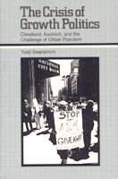

Breaks new ground in the study of community power
Breaks new ground in the study of community power


 Breaks new ground in the study of community power
Breaks new ground in the study of community power

|  |
The Crisis of Growth PoliticsCleveland, Kucinich, and the Challenge of Urban PopulismTodd Swanstrompaper EAN: 978-0-87722-562-1 (ISBN: 0-87722-562-1) |
Best Book in Urban Politics Award, American Political Science Association, 1988
"Swanstrom has presented a well written account of the Kucinich administration. He avoids making demons of the actors, and provides suggestions for wider applications of his case study insights. The book will be useful to students and teachers of urban politics notably for its discussion of the role of private investment in government strategies."
—Growth and Change
By demonstrating the political role which investment plays in local politics, this book breaks new ground in the study of community power. Until recently, students of community power ignored growth politics because they saw the economic context of cities as nonpolitical. This study examines the effect of mobile investment on political power and public policy in Cleveland, a dying industrial city with an expanding downtown service sector. Swanstrom shows how a combative young mayor named Dennis Kucinich challenged the conservative logic of growth politics but was unable to put forth a positive agenda to address the inequities of urban development. Also, this book demonstrates how Kucinich’s brand of politics resulted in paralyzing conflict with the city council and the myriad interest groups of city politics.
Growth politics, very simply, is the effort by local governments to attract mobile wealth into their jurisdictions. Under economic pressure, many older cities have succumbed to the conservative logic of growth politics, a form of trickle-down economics. In order to provide the jobs and tax base necessary for a healthy city, the argument goes, local governments must compete with other cities for capital investment by cutting social expenditures for the poor and providing subsidies for mobile corporate investors. In Cleveland, such practices led to a striking contrast between its booming downtown and declining blue-collar neighborhoods, an uneven distribution of the costs and benefits of growth politics. Elected mayor in 1979, Kucinich refused to sell the municipal light plant, even under pressure from area bankers. This resulted in the city’s default, thereby killing an ineffective tax abatement program for downtown.
Swanstrom, who served in the administrations of both Kucinich and his more conservative successor, offers a careful study of the background, issues, and events of this highly charged episode of confrontation politics. He sets out to dispel the illusion of growth politics, to expose the politics hidden in economic growth issues, and to explore the unintended effects of reform efforts when collective interests rather than individuals benefit from political influence. Here is a study which demonstrates that growth politics and its hidden evils must be reckoned with and reexamined by those in local power.
"The book is of great value because of its documentation of political decisions controlled by economic forces; this documentation is thorough and provides an excellent bibliography for students of politics."
—Choice
"Swanstrom documents nicely at the municipal level the way in which capital can force a political readjustment through its economic domination.... A worthwhile addition to the literature in urban political economy and the best available discussion of events in Cleveland during the years when its political regime advanced programmes at odds with business interests."
—International Journal of Urban and Regional Research
Todd Swanstrom is Assistant Professor of Political Science in the Rockefeller College of Public Affairs at State University of New York, Albany He has been active in city planning both in Cleveland and in Albany.
History
Labor Studies and Work
Political Science and Public Policy
© 2015 Temple University. All Rights Reserved. This page: http://www.temple.edu/tempress/titles/355_reg.html.